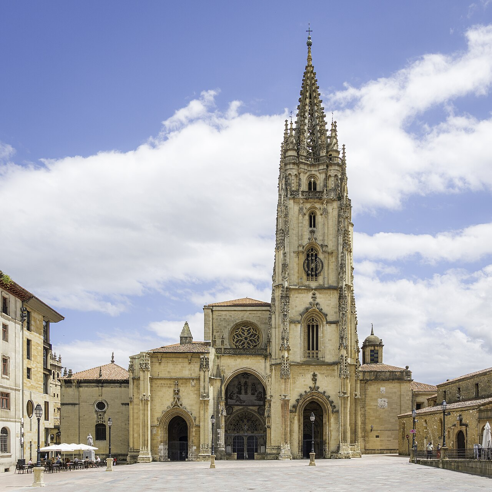

Catedral de San Salvador

La Catedral de Oviedo es uno de los principales templos del gótico en España. Su construcción comenzó en el siglo XIV sobre una catedral prerrománica anterior. Destaca su torre gótica de 80 metros y la Cámara Santa, que alberga importantes reliquias y está declarada Patrimonio de la Humanidad por la UNESCO.
El interior guarda verdaderas joyas del arte sacro, incluyendo la Cruz de los Ángeles (símbolo de la ciudad) y la Cruz de la Victoria (símbolo de Asturias).
Teatro Campoamor

Este emblemático teatro del siglo XIX es mundialmente conocido por ser la sede de la entrega de los Premios Princesa de Asturias (antes Premios Príncipe). Su arquitectura historicista y su rica decoración interior lo convierten en uno de los teatros más bellos de España.
Además de los premios, acoge una importante temporada de ópera y otros espectáculos culturales durante todo el año.